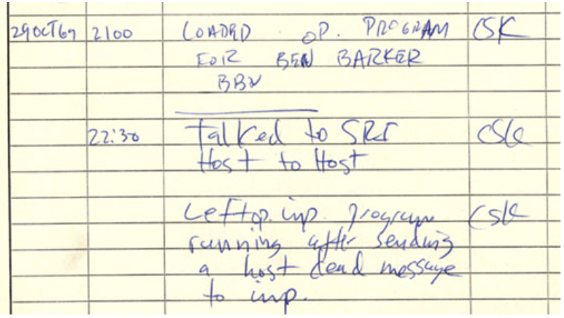
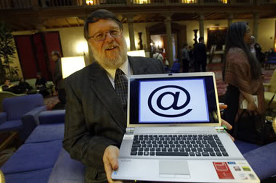
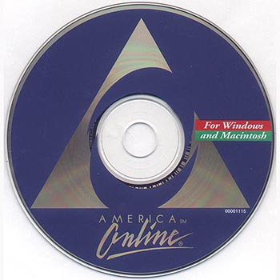

Mailbox
A brief history of email
The first example of email can be found on computers at MIT in a program called “MAILBOX”, all the way back in 1965. Users of MIT computers could leave messages with this program on computers at the university for other users, who would see the messages the next time they logged on to the computer. The system was quite effective, but only if the people wishing to communicate with each other were regularly using the same computer.
In 1969, the US Department of Defense implemented ARPANET (Advanced Research Projects Agency Network), a network connecting numerous computers across the department for the purpose of communication within the organization.
On October 29th 1969, the first message was sent from computer to computer on ARPANET.
It looked like this:

The @ Symbol
It was 1971 when Ray Tomlinson invented and developed electronic mail, as we know it today, by creating ARPANET’s networked email system. The concept of nearly instantaneous communication between machines within an organization proved to be so beneficial and practical that the concept soon began to spread. However, with the advent of internal networks the protocols for sending messages became more complex. When sending a message from one computer to another within a network, how would one indicate where the message was intended to go?
The “@” symbol, which was probably his most enduring contribution to the internet. Indicating a destination for a message became as simple as addressing it: “username@name of computer”, which is essentially how email has been addressed ever since. By 1976, 75% of all ARPANET traffic was electronic mail. The medium had proved so useful that ideas were beginning to spring up about how one might be able to send an electronic mail message to a user on a computer outside of an internal network.
This concept of communicating via email from organization to organization was the impetus for the advent of the internet itself. As inter-organizational emailing became more prevalent, a need was created for software involving the storage and organization of such emails. With this, the precursors to the modern email inbox were quickly developed.
By the 1980’s, the infancy of the internet, Internet Service Providers (ISPs) had begun connecting people across the world, and email “hosting” sites began to pop up, clamoring for their piece of the pie. For many new internet users, electronic mail was the first practical application of this exciting new medium. By 1993 the word “electronic mail” had been replaced by “email” in the public lexicon and internet use had become more widespread. Over the next few years, America Online (AOL), Echomail, Hotmail and Yahoo shaped the internet and email landscape. They pumped in marketing dollars to increase accessibility and expose a vastly wider audience to the benefits of the World Wide Web.
In the late 1990’s internet use exploded, growing from 55 million users worldwide in 1997 to 400 million by 1999. As the market potential of the internet became widely apparent, email spam began to multiply exponentially, creating the need for email sorting software. By the turn of the millennium, having an email “address” had gone from being a luxury/curiosity to being a societal expectation akin to having a phone number. The age of email had begun in earnest.
 Adapted From: A Brief History of email